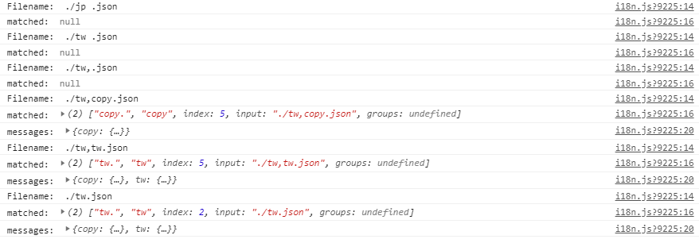

不知道為什麼，實作多國語系這部分一直都很吸引我。
Vue I18n
首先介紹 CDN 的用法。
將 vue-i18n.js 引用在 <body> 的最後；也要引用 vue 。
1 2 <script src ="https://unpkg.com/vue/dist/vue.js" > </script > <script src ="https://unpkg.com/vue-i18n/dist/vue-i18n.js" > </script >
接著來設定各國語言的內容，設定值第一層的 key 是語系名稱， value 就是這個語系的內容。
1 2 3 4 5 6 7 8 9 10 11 12 13 14 15 16 17 18 19 20 21 22 23 24 25 26 27 28 29 30 31 32 33 34 35 const messages = { en : { header : { title : "Website" }, main : { image : { text : "fake image" , font : "lobster" } } }, tw : { header : { title : "網站" }, main : { image : { text : "假圖" , font : "noto" } } }, jp : { header : { title : "サイト" }, main : { image : { text : "フェイク" , font : "noto" } } } };
再來就將設定值作為 VueI18n 實體的參數。
1 2 3 4 5 6 7 8 9 10 const i18n = new VueI18 n({ locale : 'tw' , messages : messages }); const i18n = new VueI18 n({ locale : 'tw' , messages });
然後將 VueI18n 實體 放入 Vue 實體中。
1 2 3 4 5 6 7 8 9 let app = new Vue ({ el : "#app" , i18n : i18n }); let app = new Vue ({ el : "#app" , i18n });
這樣就設定完成了。
在 HTML 中以 $t(“header.title”) 這樣的格式來取得內容。
1 <h1 class ="h1" > {{ $t("header.title") }}</h1 >
在字串裡面的用法也一樣。
1 <img class ="img" :src ="`https://fakeimg.pl/460x200/?text=${$t('main.image.text')}&font=${$t('main.image.font')}`" >
在 JavaScript 中則是例如：
想切換語系的話就直接更改 locale 。
1 this .$i18n .locale = 'jp' ;
設定值的字串是可以帶參數的，例如句子中帶有稱呼的時候：
1 2 3 4 5 6 7 8 9 10 11 12 13 14 15 const messages = { en : { main : { greeting : "{name}, Hi!" , }, tw : { main : { greeting : "{name}，你好！" , }, jp : { main : { greeting : "{name}さん、こんにちは" , } } };
用物件的方式帶入參數。
1 <h2 class ="h2" > {{$t("main.greeting", {name: "Lynn"})}}</h2 >
有些語言的後綴可能會隨著數量不同而改變，這時就可以設定不同數量時的表示法。
1 2 3 4 5 6 7 8 9 10 11 12 13 14 15 16 17 const messages = { en : { main : { sheep : "no sheep | 1 sheep | {value} sheeps" } }, tw : { main : { sheep : "沒有綿羊 | 1 隻綿羊 | {value} 隻綿羊" } }, jp : { main : { sheep : "羊がいない | 羊 1 匹 | 羊 {value} 匹" } } }
使用方式則如下：
1 2 3 4 // 要小心這邊用的是 $tc <li > {{ $tc("main.sheep", 0 , { value: 0 }) }}</li > <li > {{ $tc("main.sheep", 1 , { value: 1 }) }}</li > <li > {{ $tc("main.sheep", 2 , { value: 2 }) }}</li >
另外如果遇到其它複數規則的語言，可以參考文件：自定義複數
這是用以上的內容寫的範例。
See the Pen
Vue I18n CDN by Lynn (@clhuang224 )
on CodePen .
Vue Cli 3.x 以上的版本可以直接用指令讓 Cli 將 I18n 設定好。
或者可以自行安裝。
用 Cli 加入模組的話，會有幾個要回答的問題。
1 2 3 4 5 6 7 8 ? The locale of project localization. zh-TW ? The fallback locale of project localization. zh-TW ? The directory where store localization messages of project. It`s stored under `src` directory. locales ? Enable locale messages in Single file components ? Yes
設定好以後，專案中會產生或更動一些檔案：
1 2 3 4 5 6 7 8 9 10 11 src ├── .env ├── i18n.js ├── main.js ├── locales | └── zh-TW.json ├── components | └── HelloI18n.vue ├── vue.config.js ├── package.json └── package-lock.json
.env 宣告了兩個環境變數給其他檔案使用，如果要更改預設地區跟 fallback 地區就可以來這邊改。
1 2 VUE_APP_I18N_LOCALE=zh-TW VUE_APP_I18N_FALLBACK_LOCALE=zh-TW
i18n.js 比較長一點，但就是在設定基本的內容，跟 Vue router 的設定檔案類似。
1 2 3 4 5 6 7 8 9 10 11 12 13 14 15 16 17 18 19 20 21 22 23 24 25 26 27 28 29 30 31 32 33 34 35 36 37 38 import Vue from "vue" ;import VueI18 n from "vue-i18n" ;Vue .use (VueI18 n);function loadLocaleMessages ( const locales = require .context ( "./locales" , true , /[A-Za-z0-9-_,\s]+\.json$/i ); const messages = {}; locales.keys ().forEach (key => const matched = key.match (/([A-Za-z0-9-_]+)\./i ); if (matched && matched.length > 1 ) { const locale = matched[1 ]; messages[locale] = locales (key); } }); return messages; } export default new VueI18 n({ locale : process.env .VUE_APP_I18N_LOCALE || "en" , fallbackLocale : process.env .VUE_APP_I18N_FALLBACK_LOCALE || "en" , messages : loadLocaleMessages () });
話說中間比對檔名的部分我有點不懂為什麼是這樣子的規則，所以做了一個小實驗。
jp .json
tw .json
tw,.json
tw,copy.json
tw,tw.json
tw.json
1 2 3 4 5 6 7 8 9 10 locales.keys ().forEach (key => console .log ("Filename: " , key); const matched = key.match (/([A-Za-z0-9-_]+)\./i ); console .log ("matched: " , matched); if (matched && matched.length > 1 ) { const locale = matched[1 ]; messages[locale] = locales (key); console .log ("messages: " , messages); } });
最後跑出來結果是這樣：

可以觀察到的規則是：
不接受空白鍵或逗號結尾的檔名
有空白鍵或逗號隔開時，會選擇符號前的文字作為 key
key 重複時不會被覆蓋
所以基本上取名只要用大小寫英數字、橫線及底線就可以
main.js 的部分就是把 VueI18n 放入 Vue 實體中。
1 2 3 4 5 6 7 8 9 10 import Vue from "vue" ;import App from "./App.vue" ;import i18n from "./i18n" ; Vue .config .productionTip = false ;new Vue ({ i18n, render : h =>h (App ) }).$mount("#app" );
預設的語系檔案。
1 2 3 { "message" : "hello i18n !!" }
示範元件內使用
1 2 3 4 5 6 7 8 9 10 11 12 13 14 15 16 17 <template> <p>{{ $t("hello") }}</p> </template> <script> export default { name: "HelloI18n" }; </script> <i18n> { "en": { "hello": "Hello i18n in SFC!" } } </i18n>
i18n 相關的專案設定。
1 2 3 4 5 6 7 8 9 10 module .exports = { pluginOptions : { i18n : { locale : "zh-TW" , fallbackLocale : "zh-TW" , localeDir : "locales" , enableInSFC : true } } };
以上大概就是有關 Vue I18n 的內容，感謝閱讀到這裡：）